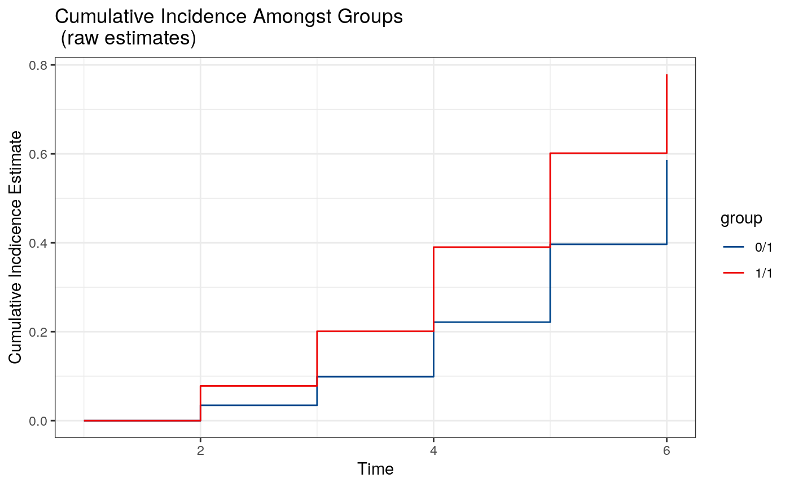

The survtmle package is designed to use targeted minimum loss-based estimation (TMLE) to compute baseline covariate-adjusted estimates of marginal cumulative incidence in right-censored survival settings with (and without) competing risks. The package facilitates flexible modeling to adjust for covariates through the use of ensemble machine learning via the SuperLearner package.
We examine the use of survtmle in a variety of simple examples. The package can be loaded as follows:
library(survtmle)## survtmle: Targeted Learning for Survival Analysis## Version: 1.0.2.1We simulate a simple data with no censoring and a single cause of failure to illustrate the machinery of the survtmle package.
set.seed(1234)
n <- 200
t_0 <- 6
trt <- rbinom(n, 1, 0.5)
adjustVars <- data.frame(W1 = round(runif(n)), W2 = round(runif(n, 0, 2)))
ftime <- round(1 + runif(n, 1, 4) - trt + adjustVars$W1 + adjustVars$W2)
ftype <- round(runif(n, 0, 1))The simple data structure contains a set of baseline covariates (adjustVars), a binary treatment variable (trt), a failure time that is a function of the treatment, adjustment variables, and a random error (ftime), and a failure type (ftype), which denotes the cause of failure (0 means no failure, 1 means failure). The first few rows of data can be viewed as follows.
## # A tibble: 200 x 5
## ftype ftime trt W1 W2
## <dbl> <dbl> <int> <dbl> <dbl>
## 1 0 5 0 1 1
## 2 1 4 1 1 1
## 3 1 4 1 0 2
## 4 0 6 1 1 2
## 5 0 4 1 1 1
## 6 1 3 1 1 0
## 7 0 7 0 0 2
## 8 0 3 0 0 0
## 9 1 4 1 0 1
## 10 0 4 1 1 1
## # ... with 190 more rowsA common goal is to compare the incidence of failure at a fixed time between the two treatment groups. Covariate adjustment is often desirable in this comparison to improve efficiency (Moore and Laan 2009). This covariate adjustment may be facilitated by estimating a series of iterated covariate-conditional means (J. M. Robins 1999,Bang and Robins (2005),Laan and Gruber (2012)). The final iterated covariate-conditional mean is marginalized over the empirical distribution of baseline covariates to obtain an estimate of the marginal cumulative incidence.
Here, we invoke the eponymous survtmle function to compute the iterated mean-based (method = "mean") covariate-adjusted estimates of the cumulative incidence at time six (t0 = 6) in each of the treatment groups using quasi-logistic regression (formula specified via glm.ftime) to estimate the iterated means. The glm.ftime argument should be a valid right-hand-side formula specification based on colnames(adjustVars) and "trt". Here we use a simple main terms regression.
# Fit 1: Use GLM-based estimators for failure w/ "mean" method
fit1 <- survtmle(ftime = ftime, ftype = ftype,
trt = trt, adjustVars = adjustVars,
glm.ftime = "trt + W1 + W2",
method = "mean", t0 = t_0)## Warning in checkInputs(ftime = ftime, ftype = ftype, trt = trt, t0 = t0, :
## glm.trt and SL.trt not specified. Proceeding with glm.trt = '1'## Warning in checkInputs(ftime = ftime, ftype = ftype, trt = trt, t0 = t0, :
## glm.ctime and SL.ctime not specified. Computing Kaplan-Meier estimates.## Warning in chol.default(B, pivot = TRUE): the matrix is either rank-
## deficient or indefinitefit1## $est
## [,1]
## 0 1 0.5667312
## 1 1 0.7353291
##
## $var
## 0 1 1 1
## 0 1 0.0261215098 0.0002153689
## 1 1 0.0002153689 0.0185303036Internally, survtmle estimates the covariate-conditional treatment probability (via glm.trt or SL.trt, see below) and covariate-conditional censoring distribution (via glm.ctime or SL.ctime, see below). In the above example, the treatment probability does not depend on covariates (as in e.g., a randomized trial) and so we did not specify a way to adjust for covariates in estimating the treatment probability. In this case, survtmle sets glm.trt = "1", which corresponds with empirical estimates of treatment probability, and sets glm.ctime to be equivalent to the Kaplan-Meier censoring distribution estimates.
In practice, we may wish to adjust for covariates when computing estimates of the covariate-conditional treatment and censoring probabilities. In observational studies, the distribution of treatment may differ by measured covariates, while in almost any study (including randomized trials) it is possible that censoring differs by covariates. Thus, we often wish to adjust for covariates to account for measured confounders of treatment receipt and censoring.
This adjustment may be accomplished using logistic regression through the glm.trt and glm.ctime arguments, respectively. The glm.trt argument should be a valid right-hand-side formula specification based on colnames(adjustVars). The glm.ctime argument should be a valid right-hand-side formula specification based on colnames(adjustVars), "trt", and "t" used to model the hazard function for censoring. By including "trt" and "t", the function allows censoring probabilities to depend on treatment assignment and time, respectively. Here we call survtmle again, now adjusting for covariates in the treatment and censoring fits.
# Fit 2: Use GLM-based estimators for failure, treatment, and censoring with the
# "mean" method
fit2 <- survtmle(ftime = ftime, ftype = ftype,
trt = trt, adjustVars = adjustVars,
glm.trt = "W1 + W2",
glm.ctime = "W1 + trt + t + I(t^2)",
glm.ftime = "trt + W1 + W2",
method = "mean", t0 = t_0)
fit2## $est
## [,1]
## 0 1 0.5657950
## 1 1 0.7411658
##
## $var
## 0 1 1 1
## 0 1 0.0029470633 0.0002170549
## 1 1 0.0002170549 0.0016411250While we can certainly use logistic regression to model the treatment, censoring, and iterated means, a large benefit afforded by the survtmle package is how it leverages SuperLearner ensemble machine learning to estimate these quantities in a more flexible manner. The Super Learner method is a generalization of stacked regression (Breiman 1996) that uses cross-validation to select the best-performing estimator from a library of candidate estimators (Laan, Polley, and Hubbard 2007). Many popular machine learning algorithms have been implemented in the SuperLearner.
To utilize SuperLearner estimates, we can utilize options SL.trt, SL.ctime, and SL.ftime to estimate conditional treatment, censoring, and iterated means, respectively. See ?SuperLearner for details on options for correctly specifying a super learner library and see listWrappers() to print the methods implemented in the SuperLearner package. Here we demonstrate a call to survtmle using a simple library that includes simple algorithms that are included in base R.
# Fit 3: SuperLearner estimators for treatment, failure, and censoring.
fit3 <- survtmle(ftime = ftime, ftype = ftype,
trt = trt, adjustVars = adjustVars,
SL.trt = c("SL.glm","SL.mean","SL.step"),
SL.ftime = c("SL.glm","SL.mean","SL.step"),
SL.ctime = c("SL.glm","SL.mean","SL.step"),
method = "mean", t0 = t_0)## Loading required package: nnlsfit3## $est
## [,1]
## 0 1 0.5541546
## 1 1 0.7140480
##
## $var
## 0 1 1 1
## 0 1 0.0027940998 0.0001872402
## 1 1 0.0001872402 0.0017399509Remark: Invoking survtmle with method = "mean" and SL.ftime requires fitting a Super Learner for each time point from seq_len(t0). If there are many unique time points observed in the data, this can become a computationally intensive process. In such cases, we recommend either redefining the ftime variable to pool across time points or using method = "hazard" (see below).
An alternative method to the iterated mean-based TMLE for estimating cumulative incidence is based on estimated the (cause-specific) hazard function. This estimator is implemented by specifying method = "hazard" in a call to survtmle. Just as with method = "mean", we can use either glm. or SL. to adjust for covariates. However, now the glm.ftime formula may additionally include functions of time, as this formula is now being used in a pooled regression to estimate cause-specific hazards over time.
# Fit 4: GLM estimators for treatment, censoring, and failure w/ "hazard" method
# Note the inclusion of 't' in the formula for glm.ftime.
fit4 <- survtmle(ftime = ftime, ftype = ftype,
trt = trt, adjustVars = adjustVars,
glm.trt = "W1 + W2",
glm.ftime = "trt + W1 + W2 + t + I(t^2)",
glm.ctime = "trt + W1 + W2*t",
method = "hazard", t0 = t_0)
fit4## $est
## [,1]
## 0 1 0.5864610
## 1 1 0.7788141
##
## $var
## 0 1 1 1
## 0 1 0.0028138563 0.0002638809
## 1 1 0.0002638809 0.0018133124Here’s an example using Super Learner.
# Fit 5: SuperLearner estimators for failure and censoring, alongside empirical
# estimators for treatment (the default) using the "hazard" method.
# Note that the super learner for ftime is also adjusting for time.
fit5 <- survtmle(ftime = ftime, ftype = ftype,
trt = trt, adjustVars = adjustVars,
SL.trt = c("SL.glm", "SL.mean", "SL.step"),
SL.ftime = c("SL.glm", "SL.mean", "SL.step"),
SL.ctime = c("SL.glm", "SL.mean", "SL.step"),
method = "hazard", t0 = t_0)
fit5## $est
## [,1]
## 0 1 0.5836815
## 1 1 0.7634571
##
## $var
## 0 1 1 1
## 0 1 0.0026784034 0.0002269052
## 1 1 0.0002269052 0.0020455780Remark: The TMLE algorithm for the hazard-based estimator differs from the iterated mean-based TMLE. In particular, the algorithm is iterative and has no guarantee of convergence. While we have not identified instances where convergence is a serious problem, we encourage users to submit any such situations as GitHub issues or to write directly to benkeser@emory.edu. The stopping criteria for the iteration may be adjusted via tol and maxIter options. Increasing tol or decreasing maxIter will lead to faster convergence; however, it is recommended that tol be set no larger than 1 / sqrt(length(ftime)). If maxIter is reached without convergence, one should check that fit$meanIC are all less than 1 / sqrt(length(ftime)).
In all of the preceding examples, we have restricted our attention to the case where there is only a single failure type of interest. Now we consider more scenarios where we observe multiple failure types. First, we simulate data with two types of failure.
set.seed(1234)
n <- 200
trt <- rbinom(n, 1, 0.5)
adjustVars <- data.frame(W1 = round(runif(n)), W2 = round(runif(n, 0, 2)))
ftime <- round(1 + runif(n, 1, 4) - trt + adjustVars$W1 + adjustVars$W2)
ftype <- round(runif(n, 0, 2))This simulated data structure is similar to the single failure type data; however, now the failure type variable (ftype) now contains two distinct types of failure (with 0 still reserved for no failure).
## # A tibble: 200 x 5
## ftype ftime trt W1 W2
## <dbl> <dbl> <int> <dbl> <dbl>
## 1 0 5 0 1 1
## 2 2 4 1 1 1
## 3 1 4 1 0 2
## 4 1 6 1 1 2
## 5 1 4 1 1 1
## 6 1 3 1 1 0
## 7 0 7 0 0 2
## 8 1 3 0 0 0
## 9 1 4 1 0 1
## 10 1 4 1 1 1
## # ... with 190 more rowsWhen multiple failure types are present, a common goal is to compare the cumulative incidence of a particular failure type at a fixed time between the two treatment groups, while accounting for the fact that participants may fail due to other failure types. Covariate adjustment is again desirable to improve efficiency and account for measured confounders of treatment and censoring.
The call to invoke survtmle is exactly the same as in the single failure type case.
# Fit 6: GLM estimators for treatment, censoring, and failure w/ "mean" method
fit6 <- survtmle(ftime = ftime, ftype = ftype,
trt = trt, adjustVars = adjustVars,
glm.trt = "W1 + W2",
glm.ftime = "trt + W1 + W2",
glm.ctime = "trt + W1 + W2",
method = "mean", t0 = t_0)
fit6## $est
## [,1]
## 0 1 0.4229114
## 1 1 0.6029411
## 0 2 0.2517493
## 1 2 0.2968020
##
## $var
## 0 1 1 1 0 2 1 2
## 0 1 3.518965e-03 2.105261e-05 -1.689263e-03 5.957709e-05
## 1 1 2.105261e-05 3.227379e-03 -2.396184e-05 -2.382514e-03
## 0 2 -1.689263e-03 -2.396184e-05 2.544764e-03 7.728650e-05
## 1 2 5.957709e-05 -2.382514e-03 7.728650e-05 2.615476e-03The output object contains cumulative incidence estimates for each of the four groups defined by the two failure types and treatments.
There are sometimes failure types that are not of direct interest to out study. Because survtmle invoked with method = "mean" computes an estimate of the cumulative incidence of each failure type separately, we can save on computation time by specifying which failure types we care about via the ftypeOfInterest option.
# Fit 7: GLM estimators for treatment, censoring, and failure w/ "mean" method
fit7 <- survtmle(ftime = ftime, ftype = ftype,
trt = trt, adjustVars = adjustVars,
glm.trt = "W1 + W2",
glm.ftime = "trt + W1 + W2",
glm.ctime = "trt + W1 + W2",
method = "mean", t0 = t_0,
ftypeOfInterest = 1)
fit7## $est
## [,1]
## 0 1 0.4229114
## 1 1 0.6029411
##
## $var
## 0 1 1 1
## 0 1 3.518965e-03 2.105261e-05
## 1 1 2.105261e-05 3.227379e-03As before, we can use the SuperLearner ensemble learning algorithm to adjust for covariates in multiple failure type settings as well.
# Fit 8: SuperLearner estimators for failure and censoring and empirical
# estimators for treatment (default) using the "mean" method.
fit8 <- survtmle(ftime = ftime, ftype = ftype,
trt = trt, adjustVars = adjustVars,
SL.trt = c("SL.glm","SL.mean","SL.step"),
SL.ftime = c("SL.glm","SL.mean","SL.step"),
SL.ctime = c("SL.glm","SL.mean","SL.step"),
method = "mean", t0 = t_0)
fit8## $est
## [,1]
## 0 1 0.4347158
## 1 1 0.6060303
## 0 2 0.2501808
## 1 2 0.2751184
##
## $var
## 0 1 1 1 0 2 1 2
## 0 1 2.689783e-03 2.060343e-05 -1.301778e-03 4.322551e-05
## 1 1 2.060343e-05 2.514412e-03 -6.451645e-06 -1.707281e-03
## 0 2 -1.301778e-03 -6.451645e-06 2.059196e-03 6.360288e-05
## 1 2 4.322551e-05 -1.707281e-03 6.360288e-05 1.954279e-03Remark: As with single failure type, the method = "mean" call to survtmle may be computationally intensive with many time points. This is especially true when there are additionally multiple failure types, as the function must repeat these calls to SuperLearner separately for each type of failure. In this case, calls to survtmle could be parallelized with one call to survtmle for each type of failure specifying ftypeOfInterest.
The TMLE based on cause-specific hazards can also be used to compute cumulative incidence estimates in settings with multiple failure types. As above, the glm.ftime formula may additionally include functions of time, as this formula is now being used in a pooled regression to estimate cause-specific hazard of each failure type over time.
# Fit 9: same as Fit 8 above, but using the "hazard" method
fit9 <- survtmle(ftime = ftime, ftype = ftype,
trt = trt, adjustVars = adjustVars,
glm.trt = "W1 + W2",
glm.ftime = "trt + W1 + W2",
glm.ctime = "trt + W1 + W2",
method = "hazard", t0 = t_0)
fit9## $est
## [,1]
## 0 1 0.4590612
## 1 1 0.6314466
## 0 2 0.2659013
## 1 2 0.2751953
##
## $var
## 0 1 1 1 0 2 1 2
## 0 1 3.516292e-03 -1.629697e-03 5.883916e-05 -4.525266e-05
## 1 1 -1.629697e-03 2.505506e-03 -5.379741e-05 8.922855e-05
## 0 2 5.883916e-05 -5.379741e-05 3.877006e-03 -3.037918e-03
## 1 2 -4.525266e-05 8.922855e-05 -3.037918e-03 3.410066e-03We can also leverage the SuperLearner algorithm when using the method of cause-specific hazards with multiple failure types of interest.
# Fit 10: same as Fit 7 above, but using the "hazard" method
fit10 <- survtmle(ftime = ftime, ftype = ftype,
trt = trt, adjustVars = adjustVars,
SL.trt = c("SL.glm","SL.mean","SL.step"),
SL.ftime = c("SL.glm","SL.mean","SL.step"),
SL.ctime = c("SL.glm","SL.mean","SL.step"),
method = "hazard", t0 = t_0)
fit10## $est
## [,1]
## 0 1 0.4561936
## 1 1 0.6098020
## 0 2 0.2895448
## 1 2 0.2627577
##
## $var
## 0 1 1 1 0 2 1 2
## 0 1 2.599773e-03 -1.309696e-03 4.811715e-05 5.362138e-05
## 1 1 -1.309696e-03 2.011762e-03 -1.172315e-05 6.302634e-05
## 0 2 4.811715e-05 -1.172315e-05 3.036662e-03 -2.161558e-03
## 1 2 5.362138e-05 6.302634e-05 -2.161558e-03 2.523458e-03As with the iterated-mean based TMLE, we can obtain estimates of cumulative incidence of only certain failure types (via ftypeOfInterest); however, this does not necessarily result in faster computation, as it did in the case above. In situations where the convergence of the algorithm is an issue, it may be useful to invoke multiple calls to survtmle with singular ftypeOfInterest. If such convergence issues arise, please report them as GitHub issues or contact us at benkeser@emory.edu.
In certain situations, we have knowledge that the incidence of an event is bounded below/above for every strata in the population. It is possible to incorporate these bounds into the TMLE estimation procedure to ensure that any resulting estimate of cumulative incidence is compatible with these bounds. Please refer to Benkeser, Carone, and Gilbert (2017) for more on bounded TMLEs and their potential benefits.
Bounds can be passed to survtmle by creating a data.frame that contains columns with specific names. In particular, there should be a column named "t". There should additionally be columns for the lower and upper bound for each type of failure. For example if there is only one type of failure (ftype = 1 or ftype = 0) then the bounds data.frame can contain columns "l1", and "u1" denote the lower and upper bounds, respectively, on the iterated conditional mean (for method = "mean") or the conditional hazard function (for method = "hazard"). If there are two types of failure (ftype = 1, ftype = 2, or ftype = 0) then there can additionally be columns "l2" and "u2" denoting the lower and upper bounds, respectively, on the iterated conditional mean for type two failures (for method = "mean") or the conditional cause-specific hazard function for type two failures (for method = "hazard").
Here is a simple example.
bf1 <- data.frame(t = seq_len(t_0), l1 = rep(0.01, t_0), u1 = rep(0.99, t_0))
bf1## t l1 u1
## 1 1 0.01 0.99
## 2 2 0.01 0.99
## 3 3 0.01 0.99
## 4 4 0.01 0.99
## 5 5 0.01 0.99
## 6 6 0.01 0.99Now that we have specified our bounds, we can invoke survtmle repeating our first example (“Fit 1”), but now restricting the iterated conditional means to follow the bounds specified above.
# Fit 11: Fit 2, but now specifying bounds on the iterated conditional means
fit11 <- survtmle(ftime = ftime, ftype = ftype,
trt = trt, adjustVars = adjustVars,
glm.trt = "W1 + W2",
glm.ftime = "trt + W1 + W2",
glm.ctime = "trt + W1 + W2",
method = "mean", t0 = t_0,
bounds = bf1)
fit11## $est
## [,1]
## 0 1 0.4230616
## 1 1 0.6028624
## 0 2 0.2517208
## 1 2 0.2967996
##
## $var
## 0 1 1 1 0 2 1 2
## 0 1 3.517185e-03 2.107583e-05 -1.688921e-03 5.968034e-05
## 1 1 2.107583e-05 3.228259e-03 -2.394680e-05 -2.382745e-03
## 0 2 -1.688921e-03 -2.394680e-05 2.544824e-03 7.730107e-05
## 1 2 5.968034e-05 -2.382745e-03 7.730107e-05 2.615547e-03When there are multiple failure types of interest, we can still provide bounds for the iterated conditional means (or the conditional hazard function, whichever is appropriate based on our specification of the method argument).
# need to make a data.frame of bounds in proper format two types of failure that
# are labeled with ftype = 1 and ftype = 2, so bounds should have columns 't',
# 'l1', 'u1', 'l2', and 'u2'.
bf2 <- data.frame(t = seq_len(t_0),
l1 = rep(0.01, t_0), u1 = rep(0.99, t_0),
l2 = rep(0.02, t_0), u2 = rep(0.99, t_0)
)
bf2## t l1 u1 l2 u2
## 1 1 0.01 0.99 0.02 0.99
## 2 2 0.01 0.99 0.02 0.99
## 3 3 0.01 0.99 0.02 0.99
## 4 4 0.01 0.99 0.02 0.99
## 5 5 0.01 0.99 0.02 0.99
## 6 6 0.01 0.99 0.02 0.99Now, we invoke survtmle, passing in the specified bounds using the appropriate argument:
# Fit 12: same as Fit 5 above, but now include bounds
fit12 <- survtmle(ftime = ftime, ftype = ftype,
trt = trt, adjustVars = adjustVars,
glm.trt = "W1 + W2",
glm.ftime = "trt + W1 + W2",
glm.ctime = "trt + W1 + W2",
method = "mean", t0 = t_0,
bounds = bf2)
fit12## $est
## [,1]
## 0 1 0.4230616
## 1 1 0.6028624
## 0 2 0.2524880
## 1 2 0.2995662
##
## $var
## 0 1 1 1 0 2 1 2
## 0 1 3.517185e-03 2.107583e-05 -1.695712e-03 6.011004e-05
## 1 1 2.107583e-05 3.228259e-03 -2.426839e-05 -2.393105e-03
## 0 2 -1.695712e-03 -2.426839e-05 2.554253e-03 7.964879e-05
## 1 2 6.011004e-05 -2.393105e-03 7.964879e-05 2.640192e-03Remark 1: Please see the discussion in Benkeser, Carone, and Gilbert (2017) on how to select bounds for these procedures. Note that poorly chosen bounds can lead to instability in the estimation procedure.
Remark 2: While it is theoretically possible to use super learner to perform bounded estimation, many of the implemented algorithms are not currently designed to respect bounds. Nevertheless, it is possible to write one’s own algorithms to incorporate such bounds. However, for the sake of stability, we have restricted the bounded implementation to glm based covariate-adjustment.
The survtmle function provides the function timepoints to compute the estimated cumulative incidence over multiple timepoints. This function is invoked after an initial call to survtmle with option returnModels = TRUE. By setting this option, the timepoints function is able to recycle fits for the conditional treatment probability, censoring distribution, and, in the case of method = "hazard", the hazard fits. Thus, invoking timepoints is faster than making repeated calls to survtmle with different t0.
There is some subtlety involved to properly leveraging this facility. Recall that the censoring distribution fit (and cause-specific hazard fit) pools over all time points. Thus, in order to most efficiently use timepoints, the initial call to survtmle should be made setting option t0 equal to the final time point at which one wants estimates of cumulative incidence. This allows these hazard fitting procedures to utilize all of the data to estimate the conditional hazard function.
We demonstrate the use of timepoints below based on the following simulated data.
set.seed(1234)
n <- 200
t_0 <- 6
trt <- rbinom(n, 1, 0.5)
adjustVars <- data.frame(W1 = round(runif(n)), W2 = round(runif(n, 0, 2)))
ftime <- round(1 + runif(n, 1, 4) - trt + adjustVars$W1 + adjustVars$W2)
ftype <- round(runif(n, 0, 1))Imagine that we would like cumulative incidence estimates at times seq_len(t_0) based on fit2 above (mean-based TMLE using glm covariate adjustment). However, note that when we originally called fit2 the option returnModels was set to its default value FALSE. Thus, we must refit this object setting the function to return the model fits.
# Refit fit 2 returning models
fit2_rm <- survtmle(ftime = ftime, ftype = ftype,
trt = trt, adjustVars = adjustVars,
glm.trt = "W1 + W2",
glm.ctime = "W1 + trt + t + I(t^2)",
glm.ftime = "trt + W1 + W2",
method = "mean", t0 = t_0,
returnModels = TRUE)
fit2_rm## $est
## [,1]
## 0 1 0.5657950
## 1 1 0.7411658
##
## $var
## 0 1 1 1
## 0 1 0.0029470633 0.0002170549
## 1 1 0.0002170549 0.0016411250Now we can call timepoints to return estimates of cumulative incidence at each time seq_len(t_0).
tp.fit2 <- timepoints(fit2_rm, times = seq_len(t_0))
# print the object
tp.fit2## $est
## t1 t2 t3 t4 t5 t6
## 1 0 0.01616033 0.08976902 0.1610393 0.3918143 0.5657950
## 2 0 0.07450353 0.18960097 0.4279096 0.5784108 0.7411658
##
## $var
## t1 t2 t3 t4 t5 t6
## 1 NA 0.0001427635 0.0007369614 0.001131293 0.002291745 0.002947063
## 2 NA 0.0006741195 0.0015590438 0.002276863 0.002277642 0.001641125Internally, timepoints is making calls to survtmle, but is passing in the fitted treatment and censoring fits from fit2_rm$trtMod and fit2_rm$ctimeMod. However, for method = "mean" the function is still fitting the iterated means separately for each time required by the call to timepoints. Thus, the call to timepoints may be quite slow if method = "mean", SL.ftime is specified (as opposed to glm.ftime), and/or many times are passed in via times. Future implementations may attempt to avoid this extra model fitting. For now, if many times are required, we recommend using method = "hazard", which is able to recycle all of the model fits. Below is an example of this.
# Refit Fit 4, setting returnModels=TRUE this time...
fit4_rm <- survtmle(ftime = ftime, ftype = ftype,
trt = trt, adjustVars = adjustVars,
glm.trt = "W1 + W2",
glm.ftime = "trt + W1 + W2 + t + I(t^2)",
glm.ctime = "trt + W1 + W2*t",
method = "hazard", t0 = t_0,
returnModels = TRUE)
# call timepoints based on this fit
tp.fit4 <- timepoints(fit4_rm, times = seq_len(t_0))
# print the object
tp.fit4## $est
## t1 t2 t3 t4 t5 t6
## 1 0 0.03457851 0.09883419 0.2215276 0.3966049 0.5864610
## 2 0 0.07816849 0.20103813 0.3901823 0.6014791 0.7788141
##
## $var
## t1 t2 t3 t4 t5 t6
## 1 NA 0.0001481315 0.000799149 0.001273434 0.002852316 0.002813856
## 2 NA 0.0007267294 0.001906479 0.003232722 0.003374974 0.001813312There is a plotting method available for timepoints to plot cumulative incidence over time in each treatment group and for each failure type.
# plot raw cumulative incidence
plot(tp.fit4, type = "raw")
Because the cumulative incidence function is being invoked pointwise, it is possible that the resulting curve is not monotone. However, it is possible to show that projecting this curve onto a monotone function via isotonic regression results in an estimate with identical asymptotic properties to the pointwise estimate. Therefore, we additionally provide an option type = "iso" (the default) that provides these smoothed curves.
# plot smoothed cumulative incidence
plot(tp.fit4)## R version 3.4.1 (2017-06-30)
## Platform: x86_64-apple-darwin16.7.0 (64-bit)
## Running under: macOS Sierra 10.12.6
##
## Matrix products: default
## BLAS: /System/Library/Frameworks/Accelerate.framework/Versions/A/Frameworks/vecLib.framework/Versions/A/libBLAS.dylib
## LAPACK: /System/Library/Frameworks/Accelerate.framework/Versions/A/Frameworks/vecLib.framework/Versions/A/libLAPACK.dylib
##
## locale:
## [1] en_US.UTF-8/en_US.UTF-8/en_US.UTF-8/C/en_US.UTF-8/en_US.UTF-8
##
## attached base packages:
## [1] stats graphics grDevices utils datasets methods base
##
## other attached packages:
## [1] nnls_1.4 survtmle_1.0.2.1 tibble_1.3.4
##
## loaded via a namespace (and not attached):
## [1] Rcpp_0.12.12 knitr_1.17
## [3] magrittr_1.5 MASS_7.3-47
## [5] munsell_0.4.3 speedglm_0.3-2
## [7] colorspace_1.3-2 lattice_0.20-35
## [9] rlang_0.1.2.9000 stringr_1.2.0.9000
## [11] plyr_1.8.4 tools_3.4.1
## [13] grid_3.4.1 gtable_0.2.0
## [15] SuperLearner_2.0-23-9000 htmltools_0.3.6
## [17] yaml_2.1.14 lazyeval_0.2.0
## [19] rprojroot_1.2 digest_0.6.12
## [21] Matrix_1.2-11 purrr_0.2.3
## [23] tidyr_0.7.0 ggplot2_2.2.1
## [25] glue_1.1.1 evaluate_0.10.1
## [27] rmarkdown_1.6 labeling_0.3
## [29] stringi_1.1.5 compiler_3.4.1
## [31] scales_0.4.1.9002 backports_1.1.0Bang, Heejung, and James M Robins. 2005. “Doubly Robust Estimation in Missing Data and Causal Inference Models.” Biometrics 61 (4). Wiley Online Library: 962–73. doi:10.1111/j.1541-0420.2005.00377.x.
Benkeser, David, Marco Carone, and Peter B Gilbert. 2017. “Improved Estimation of the Cumulative Incidence of Rare Outcomes.” Statistics in Medicine. Wiley Online Library. doi:10.1002/sim.7337.
Breiman, Leo. 1996. “Stacked Regressions.” Machine Learning 24 (1). Springer: 49–64. doi:10.1007/BF00117832.
Laan, Mark J van der, and Susan Gruber. 2012. “Targeted Minimum Loss Based Estimation of Causal Effects of Multiple Time Point Interventions.” Journal Article. The International Journal of Biostatistics 8 (1): 1–34. doi:10.1515/1557-4679.1370.
Laan, Mark J van der, Eric C Polley, and Alan E Hubbard. 2007. “Super Learner.” Journal Article. Statistical Applications in Genetics and Molecular Biology 6 (1): 1–23. doi:10.2202/1544-6115.1309.
Moore, Kelly L, and Mark J van der Laan. 2009. “Increasing Power in Randomized Trials with Right Censored Outcomes Through Covariate Adjustment.” Journal of Biopharmaceutical Statistics 19 (6). Taylor & Francis: 1099–1131. doi:10.1080/10543400903243017.
Robins, Jamie M. 1999. “Robust Estimation in Sequentially Ignorable Missing Data and Causal Inference Models.” Proceedings of the American Statistical Association Section on Bayesian Statistical Science. http://www.biostat.harvard.edu/robins/jsaprocpat1.pdf.